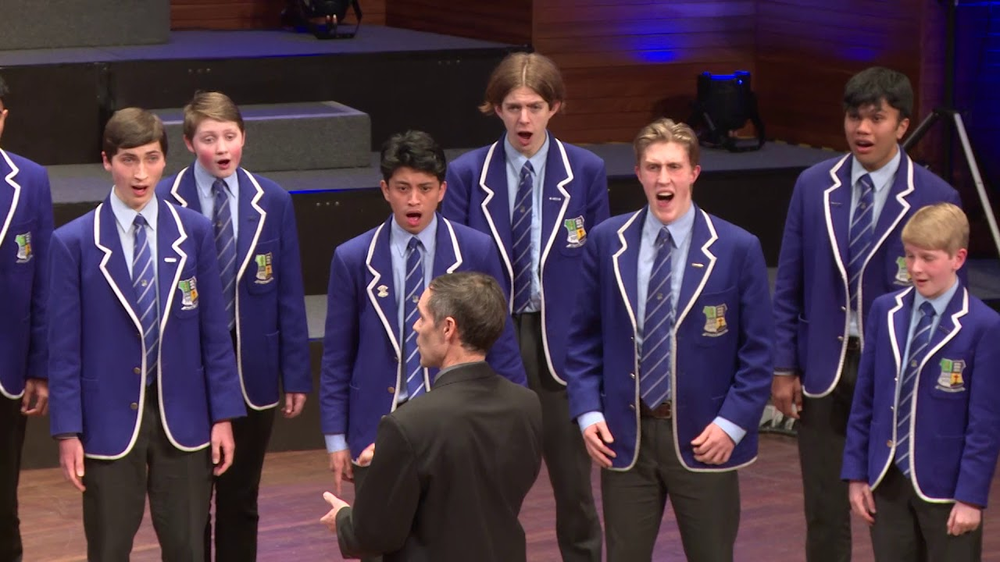

About us 

Who are we?
Our choir is composed of 30 students from year 10 to year 13 who all share a pasion for singing, striving for excellence through our dedicated commitment to the choir. Guiding us is our choir director and Head Of Music Department Roger Powdrell, itinerant vocal teacher and singer Mark Bob and itinerant piano teacher and pianist Kris Zuelicke.